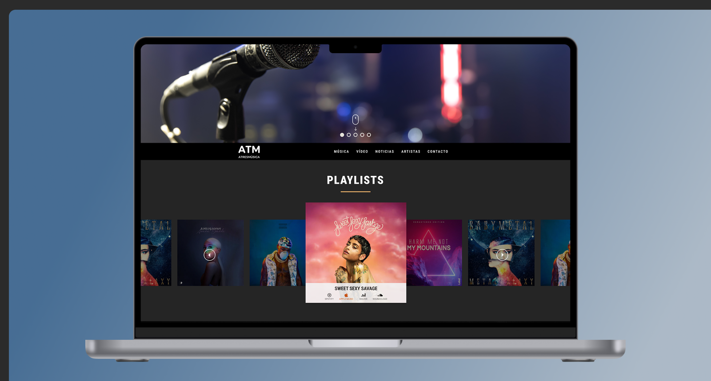
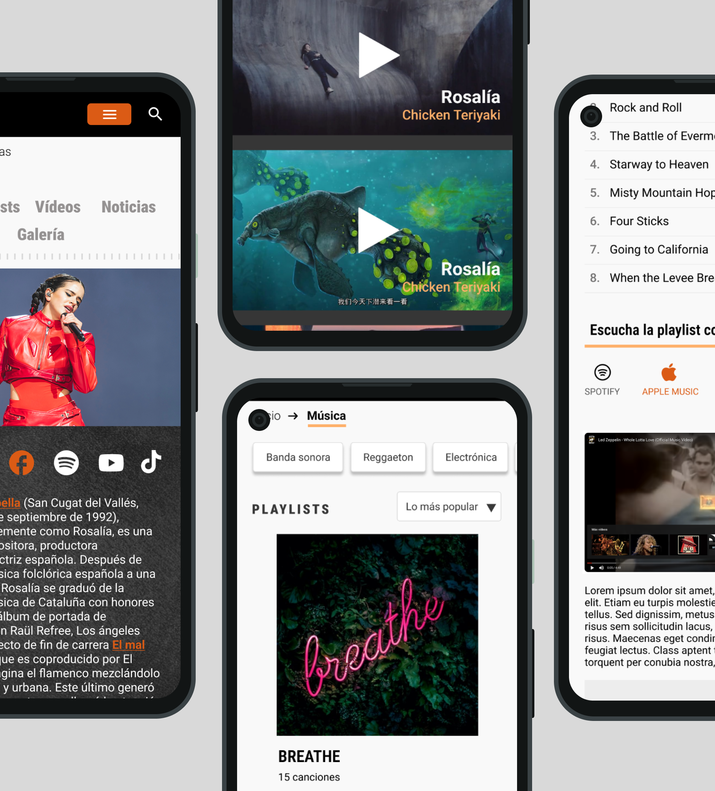
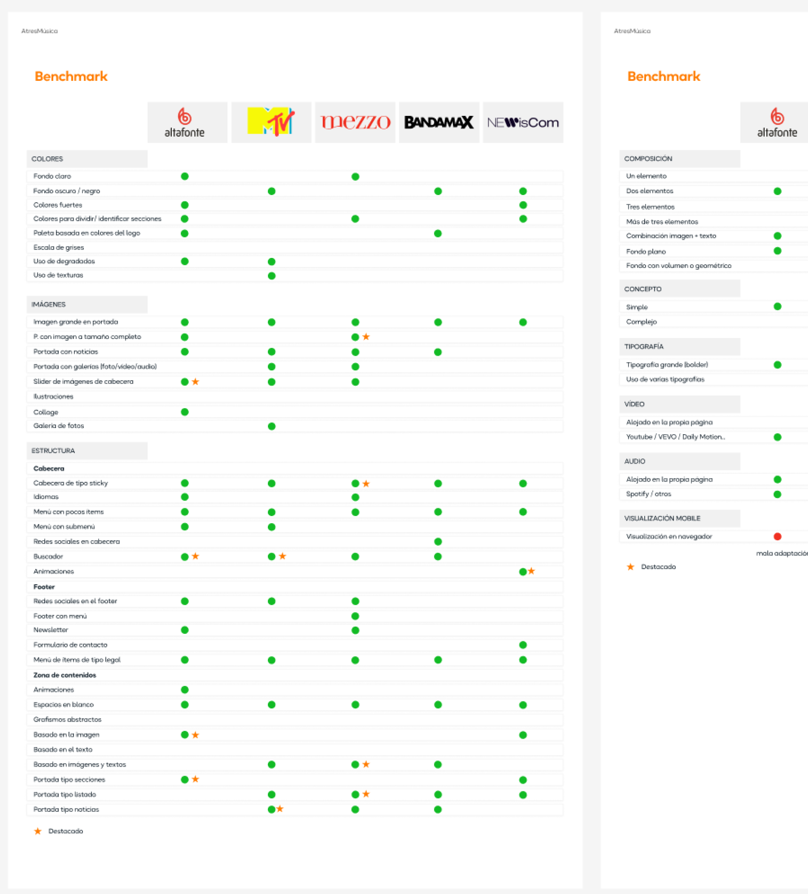

Atresmusica
Atresmúsica es el sello discográfico del Grupo Atresmedia, especializado en música vinculada a sus series, películas y programas de entretenimiento. Desde su plataforma oficial ofrece bandas sonoras originales, cabeceras musicales icónicas y una cuidada selección de lanzamientos, además de servicios de asesoría y supervisión musical para producciones audiovisuales.


